위탁 상품 45개 중 사장님 결정이 필요한 것 4개 · 완료(이미 판매중) 41개는 맨 아래 접힌 목록. 모든 카드는 지금 스마트스토어에 올라간 상품 정보로 매번 다시 만들어요(06:19 기준, 10분 캐시).
직발송 사은품(코어플렉스 케이블) 대표이미지 이전 / 지금 - 실제 크기 (6개 무작위)
킬리 에코즈 딜레이 루퍼 Keeley Eccos Delay Looper 기타 이펙터 페달 케이블증정 정품 힙
이전 (목록 176px)
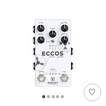
지금 (목록 176px)
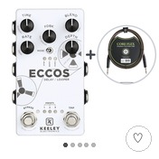
이전 (상품 페이지 390px)
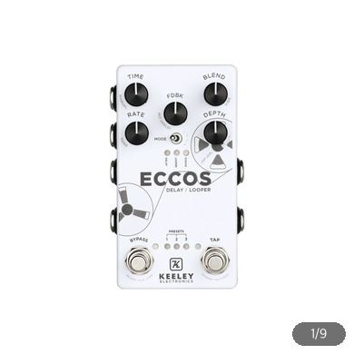
지금 (상품 페이지 390px)
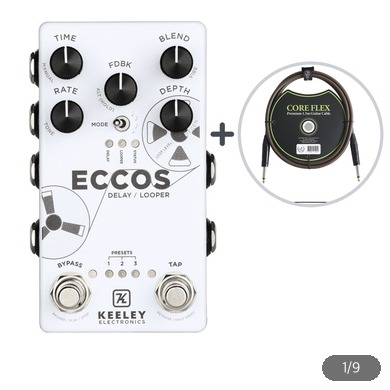
고퍼우드 스퀘어문 EX SquareMoon EX 베이스 기타 멀티이펙터 모델링 충전식 케이블증정 정품 힙베이
이전 (목록 176px)
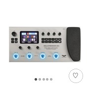
지금 (목록 176px)
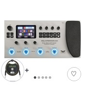
이전 (상품 페이지 390px)
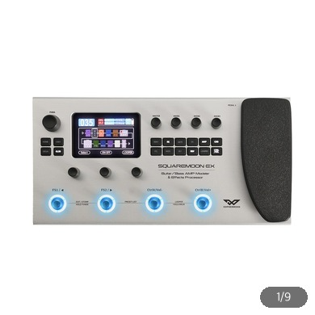
지금 (상품 페이지 390px)
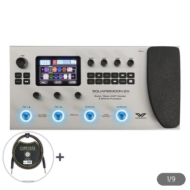
킬리 MK3 드라이버 앤디 티몬스 Keeley Mk3 Driver Andy Timmons 기타 이펙터 페달
이전 (목록 176px)
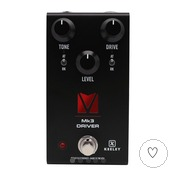
지금 (목록 176px)
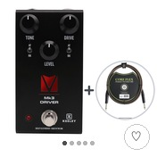
이전 (상품 페이지 390px)
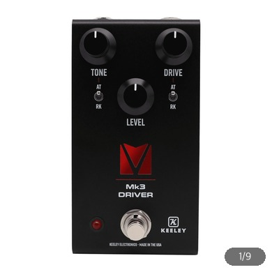
지금 (상품 페이지 390px)
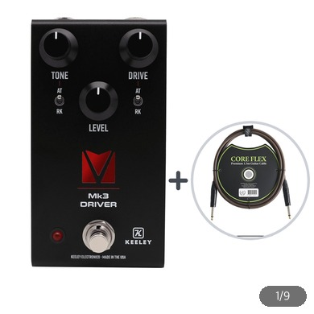
킬리 헤일로 앤디 티몬스 듀얼 에코 Keeley Halo Andy Timmons Dual Echo 기타 이펙
이전 (목록 176px)
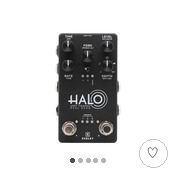
지금 (목록 176px)
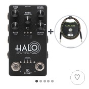
이전 (상품 페이지 390px)
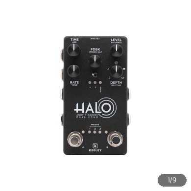
지금 (상품 페이지 390px)
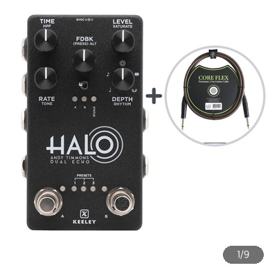
킬리 블루스 디스오더 Keeley Blues Disorder 기타 이펙터 페달 케이블증정 정품 힙베이스
이전 (목록 176px)
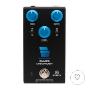
지금 (목록 176px)
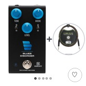
이전 (상품 페이지 390px)
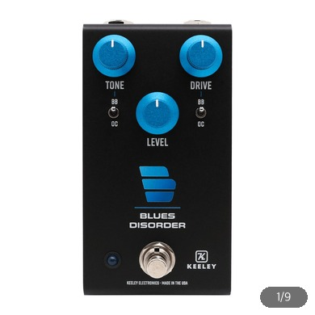
지금 (상품 페이지 390px)
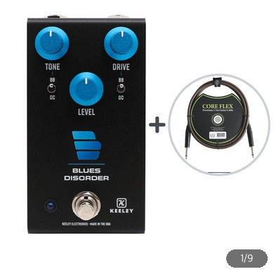
킬리 앵그리 오렌지 Keeley Angry Orange 기타 이펙터 페달 케이블증정 정품 힙베이스
이전 (목록 176px)
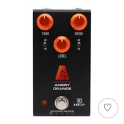
지금 (목록 176px)
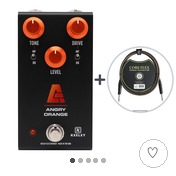
이전 (상품 페이지 390px)
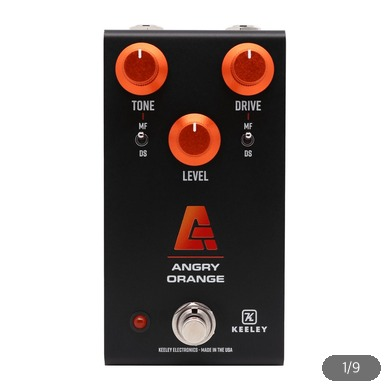
지금 (상품 페이지 390px)
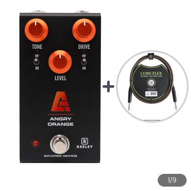
이전 / 지금 비교 (휴대폰 390px, 3개)
헤드폰앰프지급 사이어 마커스 밀러 V5 5현 전색상 베이스기타 힙베이스
이전
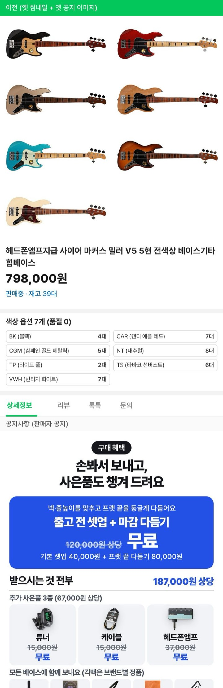
지금
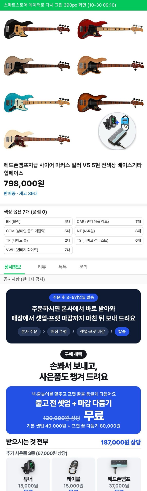
헤드폰앰프지급 스윙 재즈 디럭스 5현 Jazz Deluxe 전색상 액티브 재즈베이스기타 힙베이스
이전
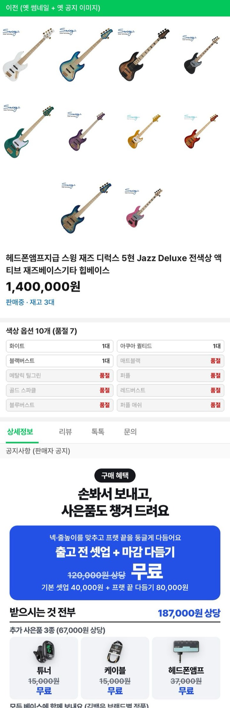
지금
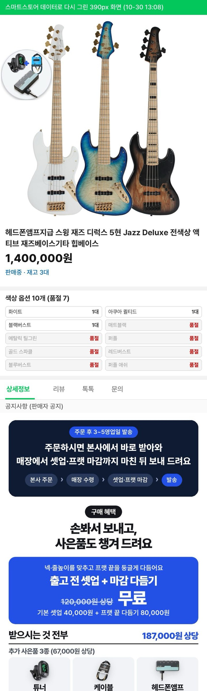
헤드폰앰프지급 사도스키 메트로익스프레스 4현 JJ 재즈베이스 전색상 베이스기타 힙베이스
이전
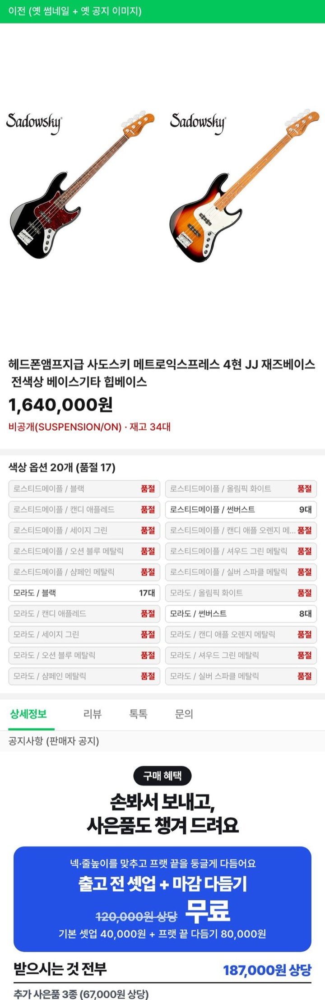
지금
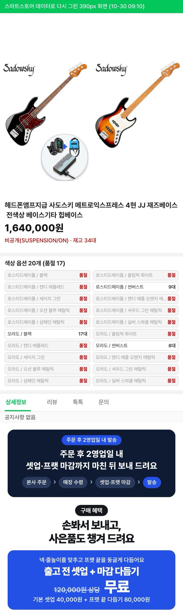
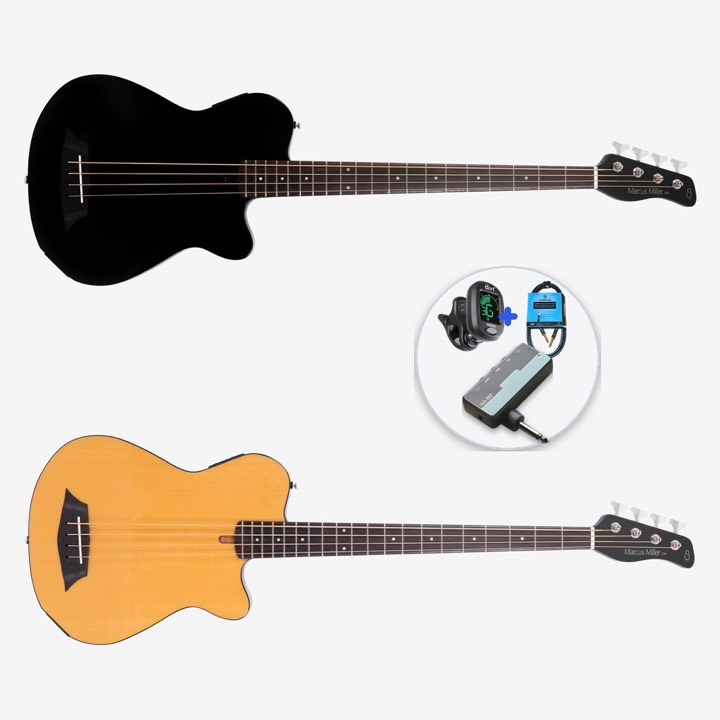
🛒 위탁
사이어 마커스 밀러 GB5 4현 어쿠스틱 베이스 전색상 베이스기타
결정 필요: 보류(사장님) - 사장님이 보류하라고 하셨어요. 다시 공개하라고 하실 때까지 비공개로 둡니다.
906,000원 · 재고 2대 · 새 상품
이유가 풀리기 전에는 공개 버튼을 숨겼어요. 풀리면 채팅으로 알려 주세요.
906,000원 · 재고(등록값) 2대 · 새로 만든 상품
색상: BK (블랙) 1대 / NT (내추럴) 1대
결정 필요: 보류(사장님) - 사장님이 보류하라고 하셨어요. 다시 공개하라고 하실 때까지 비공개로 둡니다.
가격은 사이어코리아 공식가가 아니라 공식 대리점 프리버드 정가예요(아래 '기타 결정'에도 있어요).
지금 상태(스마트스토어 API 11-01 06:18 읽음): SUSPENSION / 전시 SUSPENSION / 재고 2대
지금 스마트스토어 화면 (휴대폰 390px, 스토어 데이터로 다시 그림)
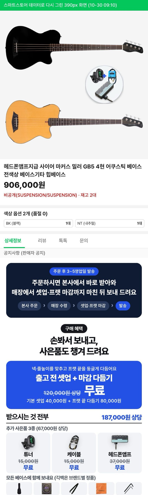
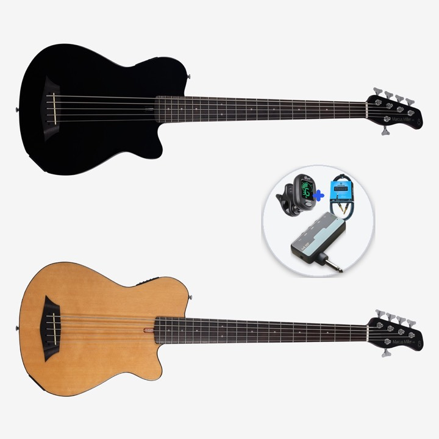
🛒 위탁
사이어 마커스 밀러 GB5 5현 어쿠스틱 베이스 전색상 베이스기타
결정 필요: 보류(사장님) - 사장님이 보류하라고 하셨어요. 다시 공개하라고 하실 때까지 비공개로 둡니다.
1,074,000원 · 재고 1대 · 새 상품
이유가 풀리기 전에는 공개 버튼을 숨겼어요. 풀리면 채팅으로 알려 주세요.
1,074,000원 · 재고(등록값) 1대 · 새로 만든 상품
색상: BK (블랙) 1대 / NT (내추럴) 품절
옵션에 없는 공식 색(썸네일에 포함): NT (내추럴)
결정 필요: 보류(사장님) - 사장님이 보류하라고 하셨어요. 다시 공개하라고 하실 때까지 비공개로 둡니다.
가격은 사이어코리아 공식가가 아니라 공식 대리점 프리버드 정가예요(아래 '기타 결정'에도 있어요).
지금 상태(스마트스토어 API 11-01 06:18 읽음): SUSPENSION / 전시 SUSPENSION / 재고 1대
지금 스마트스토어 화면 (휴대폰 390px, 스토어 데이터로 다시 그림)
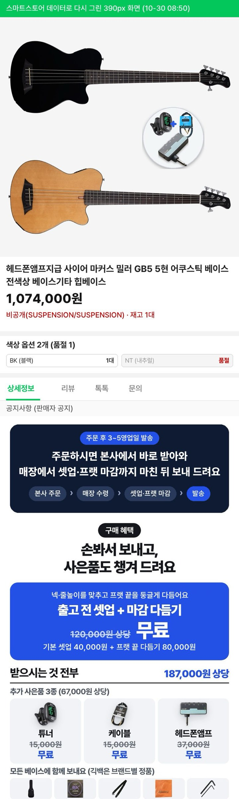
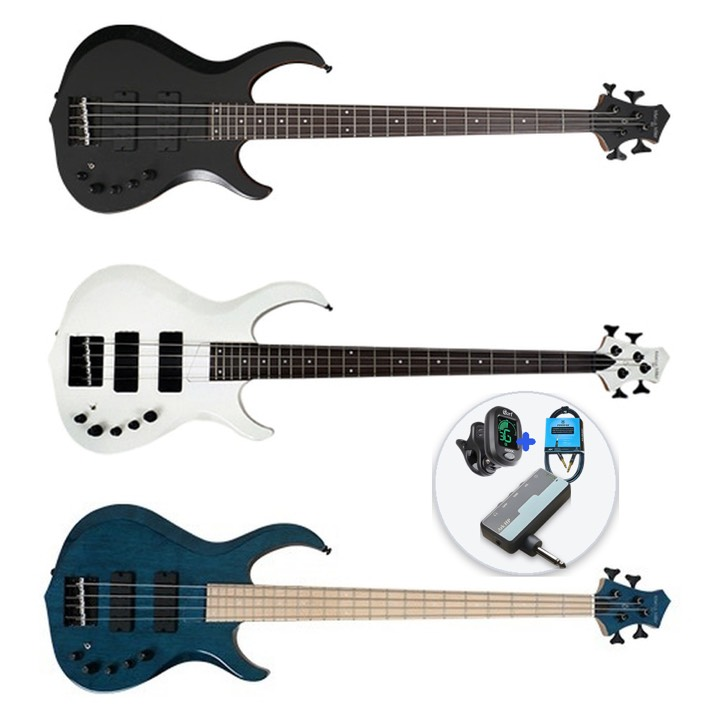
🛒 위탁
사이어 마커스 밀러 M2 4현 2세대 전색상 베이스기타
결정 필요: 보류(사장님) - 사장님이 보류하라고 하셨어요. 다시 공개하라고 하실 때까지 비공개로 둡니다.
556,000원 · 재고 0대 · 새 상품
이유가 풀리기 전에는 공개 버튼을 숨겼어요. 풀리면 채팅으로 알려 주세요.
556,000원 · 재고(등록값) 0대 · 새로 만든 상품
색상: TBK (트랜스루센트 블랙) 품절 / WHP 품절 / TBL (트랜스루센트 블루) 품절
결정 필요: 보류(사장님) - 사장님이 보류하라고 하셨어요. 다시 공개하라고 하실 때까지 비공개로 둡니다.
공지사항이 적용되지 않은 상품이에요(위탁 안내 배너 없음) - 의도한 것인지 확인해 주세요.
지금 상태(스마트스토어 API 11-01 06:18 읽음): SUSPENSION / 전시 SUSPENSION / 재고 0대
지금 스마트스토어 화면 (휴대폰 390px, 스토어 데이터로 다시 그림)
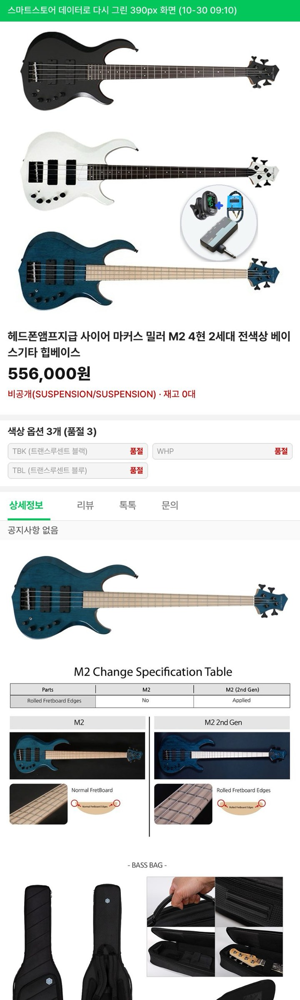
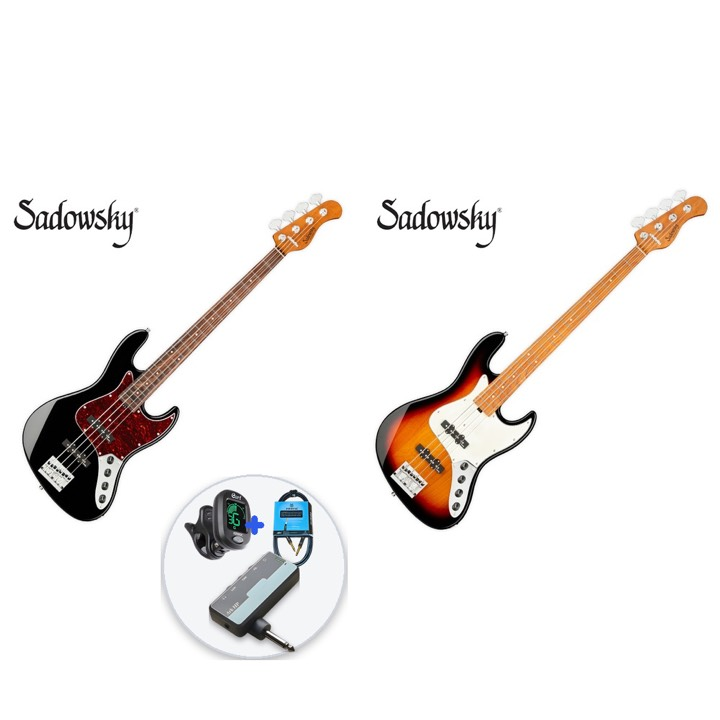
🛒 위탁
사도스키 메트로익스프레스 4현 JJ 재즈베이스 전색상 베이스기타
1,640,000원 · 재고 34대 · 새 상품
1,640,000원 · 재고(등록값) 34대 · 새로 만든 상품
색상: 로스티드메이플 / 블랙 품절 / 로스티드메이플 / 올림픽 화이트 품절 / 로스티드메이플 / 캔디 애플레드 품절 / 로스티드메이플 / 썬버스트 9대 / 로스티드메이플 / 세이지 그린 품절 / 로스티드메이플 / 캔디 애플 오렌지 메탈릭 품절 / 로스티드메이플 / 오션 블루 메탈릭 품절 / 로스티드메이플 / 셔우드 그린 메탈릭 품절 / 로스티드메이플 / 샴페인 메탈릭 품절 / 로스티드메이플 / 실버 스파클 메탈릭 품절 / 모라도 / 블랙 17대 / 모라도 / 올림픽 화이트 품절 / 모라도 / 캔디 애플레드 품절 / 모라도 / 썬버스트 8대 / 모라도 / 세이지 그린 품절 / 모라도 / 캔디 애플 오렌지 메탈릭 품절 / 모라도 / 오션 블루 메탈릭 품절 / 모라도 / 셔우드 그린 메탈릭 품절 / 모라도 / 샴페인 메탈릭 품절 / 모라도 / 실버 스파클 메탈릭 품절
공지사항이 적용되지 않은 상품이에요(위탁 안내 배너 없음) - 의도한 것인지 확인해 주세요.
지금 상태(스마트스토어 API 11-01 06:18 읽음): SUSPENSION / 전시 ON / 재고 34대
지금 스마트스토어 화면 (휴대폰 390px, 스토어 데이터로 다시 그림)

공개를 누르면 판매중 + 전시중으로 바꾸는 작업이 자동으로 시작돼요(저장 후 읽어서 확인).
완료 - 이미 판매중 (41) · 승인 필요 없어요
사이어 마커스 밀러 P7 4현 2세대 전색상 베이스기타 판매중 완료
819,000원 · 재고 14대 · 공지사항 적용(공지 5003126776) · 읽음 11-01 06:18
색상: AWH (앤티크 화이트) 4대 / BK (블랙) 6대 / RED (레드) 3대 / TS (타바코 선버스트) 1대 / D.Navy (다크 네이비) 품절
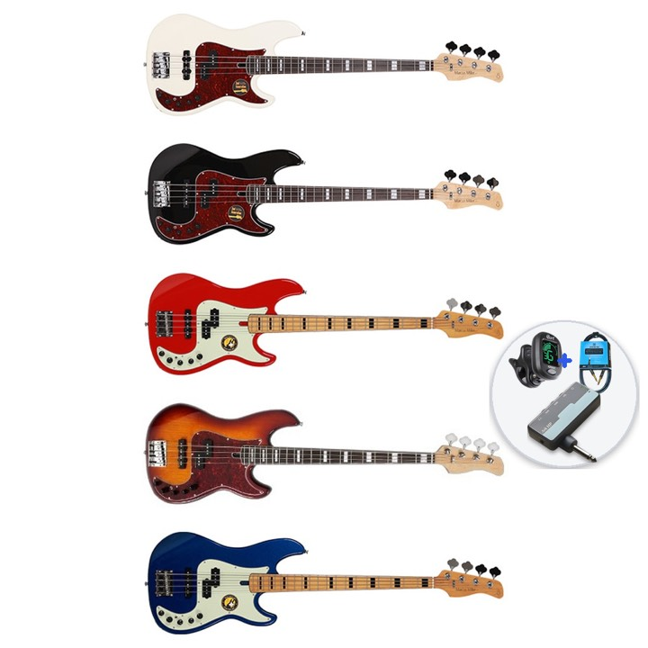
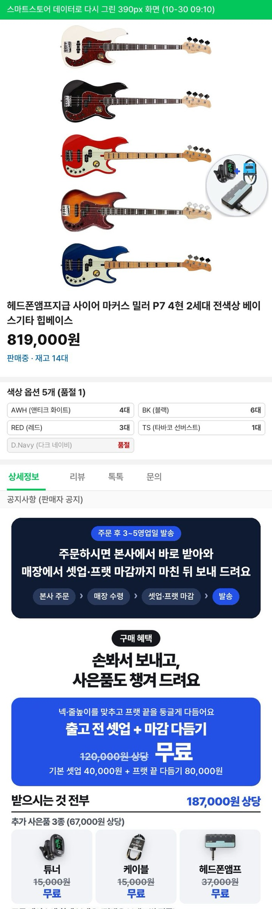
사이어 마커스 밀러 V7 앨더 5현 2세대 전색상 베이스기타 판매중 완료
899,000원 · 재고 18대 · 공지사항 적용(공지 5003126776) · 읽음 11-01 06:18
색상: BK.SP (스파클 블랙) 2대 / BMR (브라이트 메탈릭 레드) 1대 / BUR (버건디) 1대 / Redburst.SP (레드버스트 스파클) 2대 / TP (타이드 풀) 5대 / TS (타바코 선버스트) 7대 / AWH (앤티크 화이트) 품절 / BK (블랙) 품절 / LPB (레이크 플래시드 블루) 품절
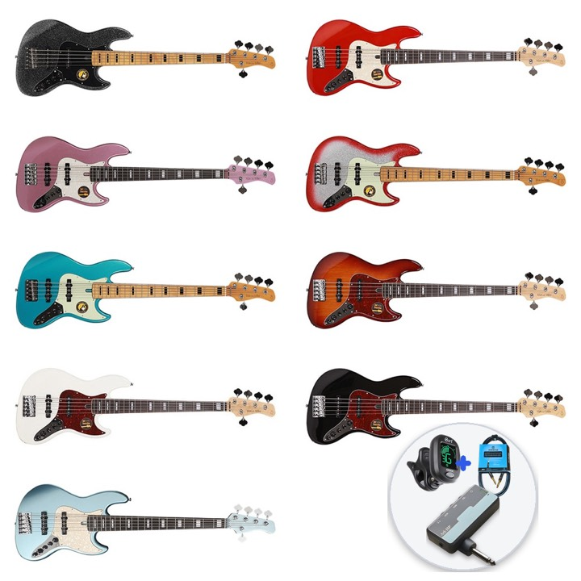
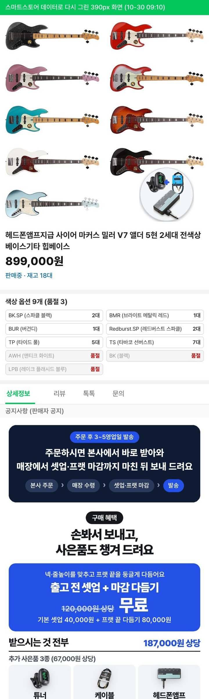
사이어 마커스 밀러 V7 애쉬 5현 2세대 전색상 베이스기타 판매중 완료
1,090,000원 · 재고 7대 · 공지사항 적용(공지 5003126776) · 읽음 11-01 06:18
색상: BKS (블랙 사틴) 7대 / TS (타바코 선버스트) 품절 / BMR (브라이트 메탈릭 레드) 품절 / NT (내추럴) 품절 / WB 품절 / LPB (레이크 플래시드 블루) 품절 / SG 품절
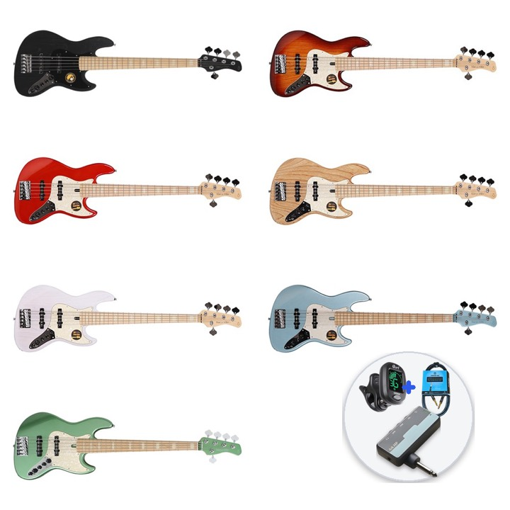
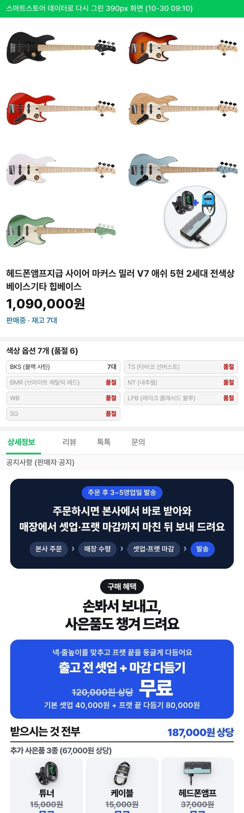
사이어 마커스 밀러 V7 빈티지 앨더 5현 2세대 전색상 베이스기타 판매중 완료
1,000,000원 · 재고 3대 · 공지사항 적용(공지 5003126776) · 읽음 11-01 06:18
색상: TS (타바코 선버스트) 3대 / AWH (앤티크 화이트) 품절 / BK (블랙) 품절 / BMR (브라이트 메탈릭 레드) 품절
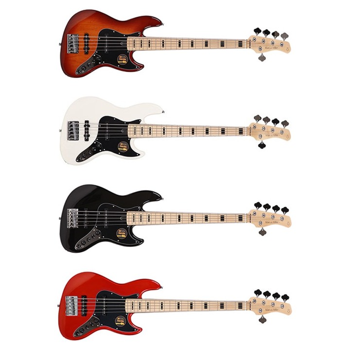
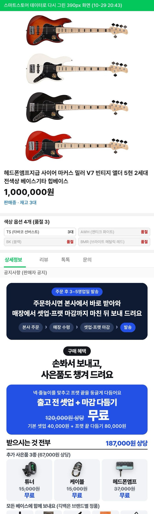
사이어 마커스 밀러 V7 빈티지 애쉬 5현 2세대 전색상 베이스기타 판매중 완료
1,336,000원 · 재고 3대 · 공지사항 적용(공지 5003126776) · 읽음 11-01 06:18
색상: BMR (브라이트 메탈릭 레드) 1대 / TS (타바코 선버스트) 1대 / WB 1대 / NT (내추럴) 품절
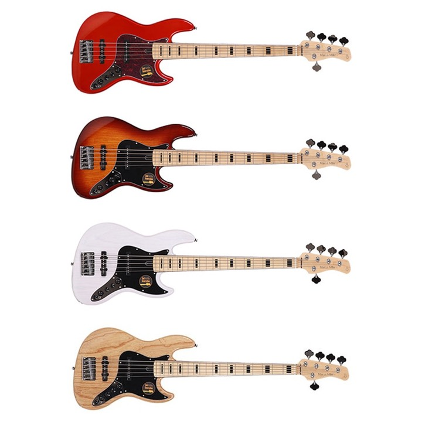
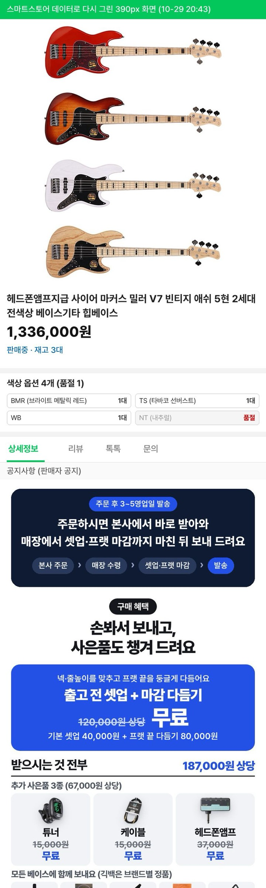
사이어 마커스 밀러 V7 5현 뉴젠(NEW GEN) 전색상 베이스기타 판매중 완료
955,000원 · 재고 7대 · 공지사항 적용(공지 5003126776) · 읽음 11-01 06:18
색상: AWH (앤티크 화이트) 4대 / Dark Forest (다크 포레스트) 3대 / NT (내추럴) 품절 / CAR (캔디 애플 레드) 품절 / Mercury (머큐리) 품절 / TP (타이드 풀) 품절 / TS (타바코 선버스트) 품절 / Yellow Swirl (옐로우 스월) 품절
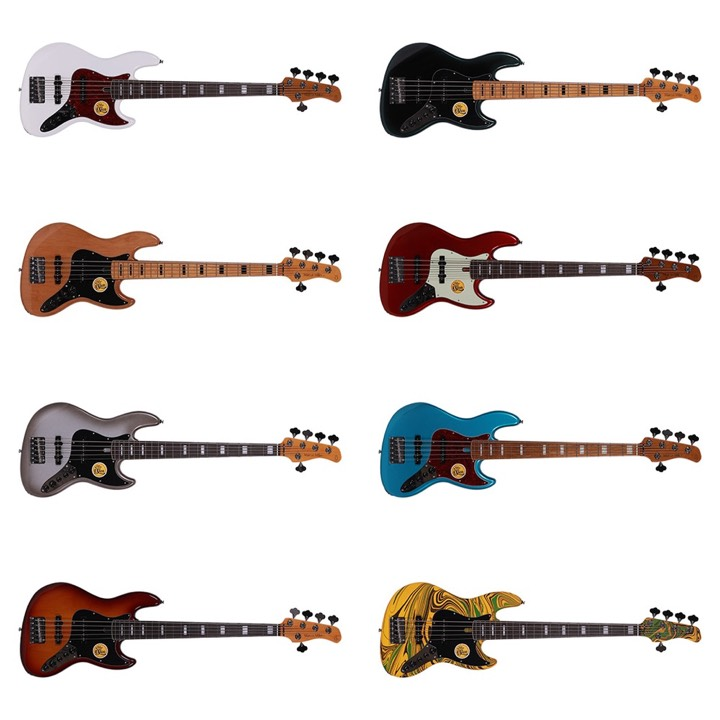
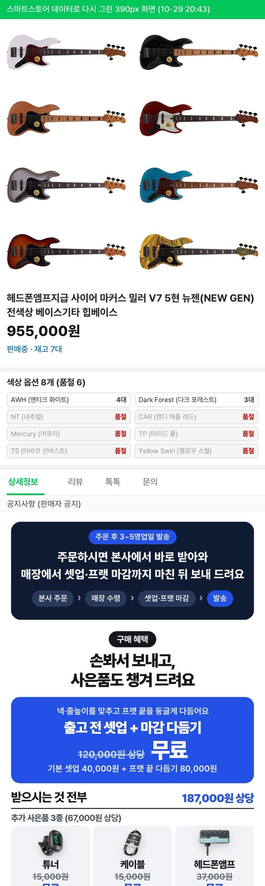
사이어 마커스 밀러 V3 4현 2세대 전색상 베이스기타 판매중 완료
567,000원 · 재고 13대 · 공지사항 적용(공지 5003126776) · 읽음 11-01 06:18
색상: Orange (오렌지) 13대 / TS (타바코 선버스트) 품절 / AWH (앤티크 화이트) 품절 / BK (블랙) 품절 / MA 품절 / SNB 품절 / BK Satin (블랙 사틴) 품절 / RS 품절
사이어 마커스 밀러 P5 5현 전색상 베이스기타 판매중 완료
798,000원 · 재고 8대 · 공지사항 적용(공지 5003126776) · 읽음 11-01 06:18
색상: MGO 2대 / Mild GR (마일드 그린) 2대 / Dakota Red (다코타 레드) 2대 / TS (타바코 선버스트) 2대
사이어 마커스 밀러 P5R 5현 전색상 베이스기타 판매중 완료
798,000원 · 재고 3대 · 공지사항 적용(공지 5003126776) · 읽음 11-01 06:18
색상: NT (내추럴) 2대 / TS (타바코 선버스트) 1대 / VWH (빈티지 화이트) 품절
사이어 마커스 밀러 V5 5현 전색상 베이스기타 판매중 완료
798,000원 · 재고 39대 · 공지사항 적용(공지 5003126776) · 읽음 11-01 06:18
색상: BK (블랙) 4대 / CAR (캔디 애플 레드) 7대 / CGM (샴페인 골드 메탈릭) 5대 / NT (내추럴) 8대 / TP (타이드 풀) 2대 / TS (타바코 선버스트) 6대 / VWH (빈티지 화이트) 7대

사이어 마커스 밀러 V5R 5현 전색상 베이스기타 판매중 완료
798,000원 · 재고 28대 · 공지사항 적용(공지 5003126776) · 읽음 11-01 06:18
색상: MLG (마일드 그린) 10대 / NT (내추럴) 8대 / TS (타바코 선버스트) 10대
사이어 마커스 밀러 V10 4현 전색상 베이스기타 판매중 완료
1,680,000원 · 재고 4대 · 공지사항 적용(공지 5003126776) · 읽음 11-01 06:18
색상: TBK.S (트랜스루센트 블랙 새틴) 4대 / TGR.S (트랜스루센트 그린 새틴) 품절 / NT.S (내추럴 새틴) 품절
사이어 마커스 밀러 V10 5현 전색상 베이스기타 판매중 완료
1,820,000원 · 재고 2대 · 공지사항 적용(공지 5003126776) · 읽음 11-01 06:18
색상: NT.S (내추럴 새틴) 2대 / TBK.S (트랜스루센트 블랙 새틴) 품절 / TGR.S (트랜스루센트 그린 새틴) 품절
사이어 마커스 밀러 V8 5현 전색상 베이스기타 판매중 완료
1,240,000원 · 재고 1대 · 공지사항 적용(공지 5003126776) · 읽음 11-01 06:18
색상: TS (타바코 선버스트) 1대 / NT (내추럴) 품절 / WB 품절
사이어 마커스 밀러 M6 4현 헤드리스 전색상 베이스기타 판매중 완료
1,190,000원 · 재고 4대 · 공지사항 적용(공지 5003126776) · 읽음 11-01 06:18
색상: SGM.S 4대 / MA.S 품절 / TS.S (타바코 선버스트 새틴) 품절
사이어 마커스 밀러 F10 6현 전색상 베이스기타 판매중 완료
2,798,000원 · 재고 1대 · 공지사항 적용(공지 5003126776) · 읽음 11-01 06:18
색상: NT.S (내추럴 새틴) 1대
사이어 마커스 밀러 F10 DC 4현 전색상 베이스기타 판매중 완료
2,390,000원 · 재고 1대 · 공지사항 적용(공지 5003126776) · 읽음 11-01 06:18
색상: NT (내추럴) 1대
사이어 마커스 밀러 F10 DX 5현 전색상 베이스기타 판매중 완료
2,798,000원 · 재고 1대 · 공지사항 적용(공지 5003126776) · 읽음 11-01 06:18
색상: NT (내추럴) 1대
사도스키 메트로익스프레스 4현 PJ 하이브리드 전색상 베이스기타 판매중 완료
1,640,000원 · 재고 60대 · 공지사항 없음 · 읽음 11-01 06:18
색상: 로스티드메이플 / 블랙 10대 / 로스티드메이플 / 올림픽 화이트 10대 / 로스티드메이플 / 캔디 애플레드 품절 / 로스티드메이플 / 썬버스트 4대 / 로스티드메이플 / 세이지 그린 4대 / 로스티드메이플 / 캔디 애플 오렌지 메탈릭 품절 / 로스티드메이플 / 오션 블루 메탈릭 품절 / 로스티드메이플 / 셔우드 그린 메탈릭 품절 / 로스티드메이플 / 샴페인 메탈릭 품절 / 로스티드메이플 / 실버 스파클 메탈릭 품절 / 모라도 / 블랙 10대 / 모라도 / 올림픽 화이트 9대 / 모라도 / 캔디 애플레드 4대 / 모라도 / 썬버스트 6대 / 모라도 / 세이지 그린 3대 / 모라도 / 캔디 애플 오렌지 메탈릭 품절 / 모라도 / 오션 블루 메탈릭 품절 / 모라도 / 셔우드 그린 메탈릭 품절 / 모라도 / 샴페인 메탈릭 품절 / 모라도 / 실버 스파클 메탈릭 품절
사도스키 메트로익스프레스 5현 PJ 하이브리드 전색상 베이스기타 판매중 완료
1,730,000원 · 재고 23대 · 공지사항 없음 · 읽음 11-01 06:18
색상: 로스티드메이플 / 블랙 7대 / 로스티드메이플 / 올림픽 화이트 품절 / 로스티드메이플 / 캔디 애플레드 품절 / 로스티드메이플 / 썬버스트 4대 / 로스티드메이플 / 세이지 그린 품절 / 로스티드메이플 / 캔디 애플 오렌지 메탈릭 품절 / 로스티드메이플 / 오션 블루 메탈릭 품절 / 로스티드메이플 / 셔우드 그린 메탈릭 품절 / 로스티드메이플 / 샴페인 메탈릭 품절 / 로스티드메이플 / 실버 스파클 메탈릭 품절 / 모라도 / 블랙 5대 / 모라도 / 올림픽 화이트 4대 / 모라도 / 캔디 애플레드 품절 / 모라도 / 썬버스트 3대 / 모라도 / 세이지 그린 품절 / 모라도 / 캔디 애플 오렌지 메탈릭 품절 / 모라도 / 오션 블루 메탈릭 품절 / 모라도 / 셔우드 그린 메탈릭 품절 / 모라도 / 샴페인 메탈릭 품절 / 모라도 / 실버 스파클 메탈릭 품절
사도스키 메트로익스프레스 24프렛 4현 모던 베이스 전색상 베이스기타 판매중 완료
1,690,000원 · 재고 20대 · 공지사항 없음 · 읽음 11-01 06:18
색상: 로스티드메이플 / 블랙 3대 / 로스티드메이플 / 올림픽 화이트 3대 / 로스티드메이플 / 캔디 애플레드 품절 / 로스티드메이플 / 썬버스트 3대 / 로스티드메이플 / 세이지 그린 품절 / 로스티드메이플 / 캔디 애플 오렌지 메탈릭 품절 / 로스티드메이플 / 오션 블루 메탈릭 품절 / 로스티드메이플 / 셔우드 그린 메탈릭 품절 / 로스티드메이플 / 샴페인 메탈릭 품절 / 로스티드메이플 / 실버 스파클 메탈릭 품절 / 모라도 / 블랙 3대 / 모라도 / 올림픽 화이트 4대 / 모라도 / 캔디 애플레드 품절 / 모라도 / 썬버스트 4대 / 모라도 / 세이지 그린 품절 / 모라도 / 캔디 애플 오렌지 메탈릭 품절 / 모라도 / 오션 블루 메탈릭 품절 / 모라도 / 셔우드 그린 메탈릭 품절 / 모라도 / 샴페인 메탈릭 품절 / 모라도 / 실버 스파클 메탈릭 품절
스윙 재즈 디럭스 4현 Jazz Deluxe 전색상 액티브 재즈베이스기타 판매중 완료
950,000원 · 재고 4대 · 공지사항 적용(공지 5003126776) · 읽음 11-01 06:18
색상: 블루버스트 1대 / 메탈릭 틸그린 1대 / 퍼플 1대 / 레드버스트 1대 / 매트블랙 품절 / 블랙버스트 품절
스윙 재즈 디럭스 5현 Jazz Deluxe 전색상 액티브 재즈베이스기타 판매중 완료
1,400,000원 · 재고 3대 · 공지사항 적용(공지 5003126776) · 읽음 11-01 06:18
색상: 화이트 1대 / 아쿠아 퀼티드 1대 / 블랙버스트 1대 / 매트블랙 품절 / 메탈릭 틸그린 품절 / 퍼플 품절 / 골드 스파클 품절 / 레드버스트 품절 / 블루버스트 품절 / 퍼플 애쉬 품절

스윙 모던 J 베이스 Modern J Bass 4현 전색상 재즈베이스기타 판매중 완료
540,000원 · 재고 3대 · 공지사항 적용(공지 5003126776) · 읽음 11-01 06:18
색상: 그린 1대 / 아쿠아 1대 / 차콜 1대
스윙 G-1 SE 4현 G-1SE 전색상 패시브 재즈베이스기타 입문용 판매중 완료
398,000원 · 재고 5대 · 공지사항 적용(공지 5003126776) · 읽음 11-01 06:18
색상: 블랙 로즈우드지판 1대 / 쉘핑크 메이플지판 1대 / 쉘핑크 로즈우드지판 1대 / 소닉블루 메이플지판 1대 / 소닉블루 로즈우드지판 1대
스윙 G-1 PRO 4현 G-1Pro 전색상 재즈베이스기타 판매중 완료
480,000원 · 재고 7대 · 공지사항 적용(공지 5003126776) · 읽음 11-01 06:18
색상: 블랙 메이플지판 1대 / 블랙 로즈우드지판 1대 / 화이트 메이플지판 1대 / 화이트 로즈우드지판 1대 / 소닉블루 메이플지판 1대 / 소닉블루 로즈우드지판 1대 / 투톤선버스트 로즈우드지판 1대
스윙 G3 4현 전색상 재즈베이스기타 챔버드 알더바디 판매중 완료
690,000원 · 재고 2대 · 공지사항 적용(공지 5003126776) · 읽음 11-01 06:18
색상: 블랙 1대 / 화이트 1대
스윙 G5 4현 전색상 액티브 재즈베이스기타 판매중 완료
820,000원 · 재고 4대 · 공지사항 적용(공지 5003126776) · 읽음 11-01 06:18
색상: 블랙 1대 / 화이트 1대 / 그린 스파클 1대 / 머스타드 스파클 1대
스윙 G5V 5현 전색상 액티브 재즈베이스기타 판매중 완료
870,000원 · 재고 2대 · 공지사항 적용(공지 5003126776) · 읽음 11-01 06:18
색상: 화이트 1대 / 머스타드 스파클 1대 / 그린 스파클 품절 / 매트블랙 품절
스윙 재즈킹 플러스 4현 Jazz King Plus 재즈베이스기타 입문용 판매중 완료
350,000원 · 재고 1대 · 공지사항 적용(공지 5003126776) · 읽음 11-01 06:18
색상: 투톤선버스트 1대
스윙 PJ-4M 4현 프레시전 레릭 베이스기타 메이플지판 판매중 완료
498,000원 · 재고 1대 · 공지사항 적용(공지 5003126776) · 읽음 11-01 06:18
색상: 블랙 레릭 메이플지판 1대
스윙 FV-1 4현 FV1 베이스기타 입문용 판매중 완료
310,000원 · 재고 1대 · 공지사항 적용(공지 5003126776) · 읽음 11-01 06:18
색상: 화이트 1대
스윙 올드갱 Old Gang 4현 전색상 베이스기타 레릭 판매중 완료
420,000원 · 재고 2대 · 공지사항 적용(공지 5003126776) · 읽음 11-01 06:18
색상: 블론드 1대 / 피에스타레드 1대
스윙 재즈 4V 4현 Jazz 4V 재즈베이스기타 메이플지판 판매중 완료
580,000원 · 재고 2대 · 공지사항 적용(공지 5003126776) · 읽음 11-01 06:18
색상: 그린 1대 / 바이올렛 1대
스윙 재즈 5V 5현 Jazz 5V 재즈베이스기타 메이플지판 판매중 완료
650,000원 · 재고 2대 · 공지사항 적용(공지 5003126776) · 읽음 11-01 06:18
색상: 그린 1대 / 바이올렛 1대 / 메탈릭 틸그린 품절 / 블루버스트 품절 / 레드버스트 품절
데임 VS5 5ST 5현 재즈 베이스기타 전색상 입문용 중급용 롤드엣지 판매중 완료
546,000원 · 재고 7대 · 공지사항 적용(공지 5003126776) · 읽음 11-01 06:18
색상: AWH (앤티크 화이트) 1대 / LPB (레이크 플래시드 블루) 3대 / BUR (버건디) 1대 / BKS (블랙 새틴) 1대 / Dark Knight (다크 나이트) 1대
데임 VS7 앨더 4현 재즈 베이스기타 전색상 입문용 중급용 롤드엣지 판매중 완료
672,000원 · 재고 1대 · 공지사항 적용(공지 5003126776) · 읽음 11-01 06:18
색상: Mercury (머큐리) 품절 / Dark Forest (다크 포레스트) 품절 / BK (블랙) 품절 / AWH (앤티크 화이트) 품절 / 3TS (3톤 선버스트) 1대
고퍼우드 J클래식4 5현 베이스기타 J classic IV 5ST 전색상 입문용 판매중 완료
489,000원 · 재고 4대 · 공지사항 적용(공지 5003126776) · 읽음 11-01 06:18
색상: WHITE4015B (플로럴 화이트) 2대 / BLACK4005B (젯 블랙) 2대
고퍼우드 J클래식6 5현 베이스기타 J classic VI 5ST 전색상 액티브 판매중 완료
790,000원 · 재고 4대 · 공지사항 적용(공지 5003126776) · 읽음 11-01 06:18
색상: WHITE6015B (플로럴 화이트) 2대 / BLACK6005B (젯 블랙) 2대
헥스 NB300 4현 숏스케일 헤드리스 베이스기타 전색상 입문용 판매중 완료
525,000원 · 재고 1대 · 공지사항 적용(공지 5003126776) · 읽음 11-01 06:18
색상: S/BK (무광 블랙) 품절 / S/IV (무광 아이보리) 1대